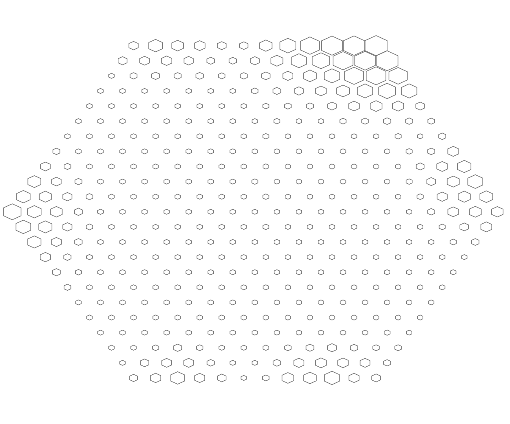
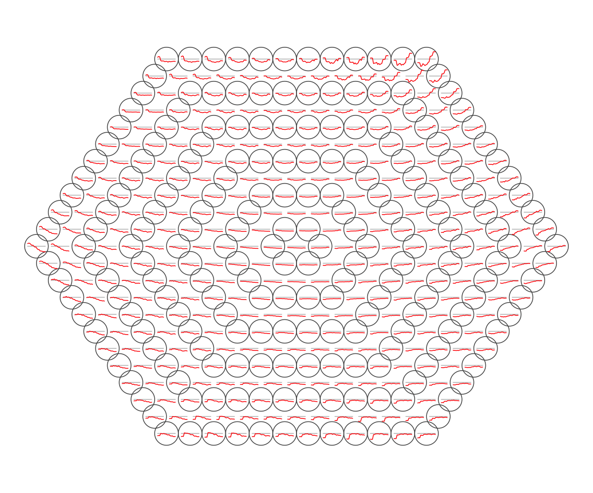
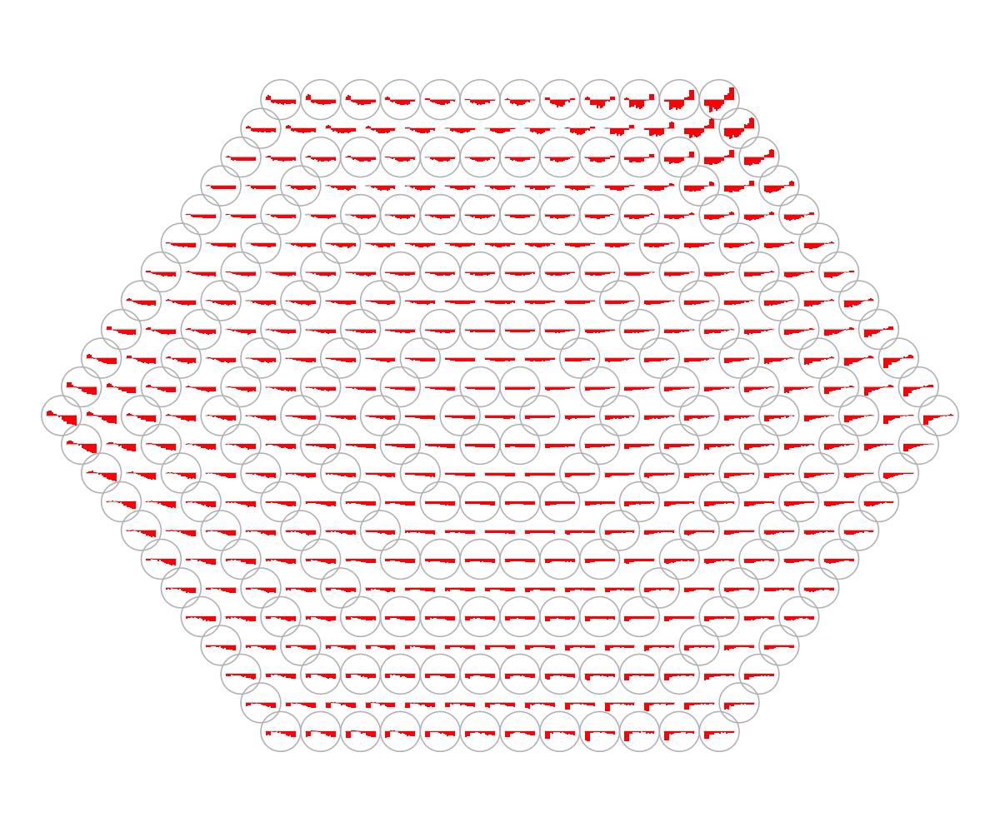
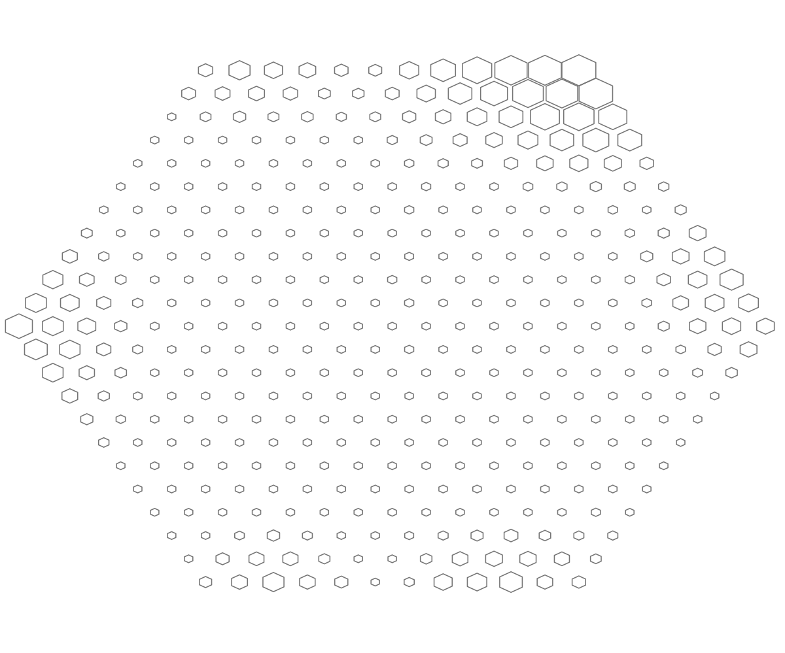
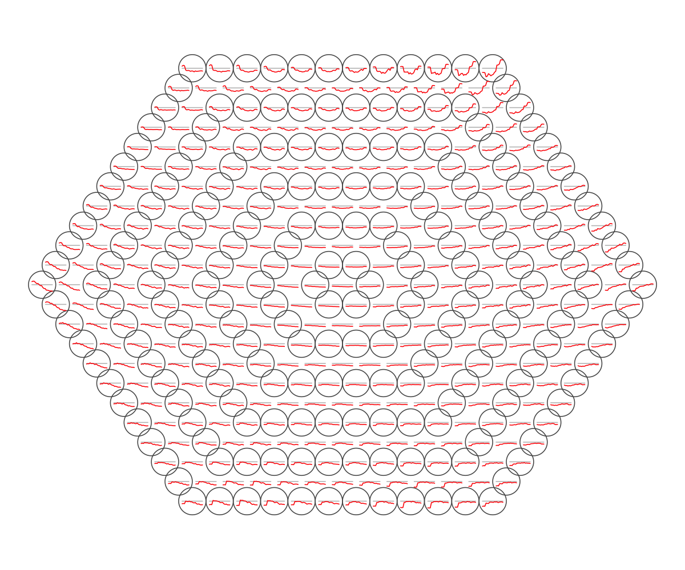
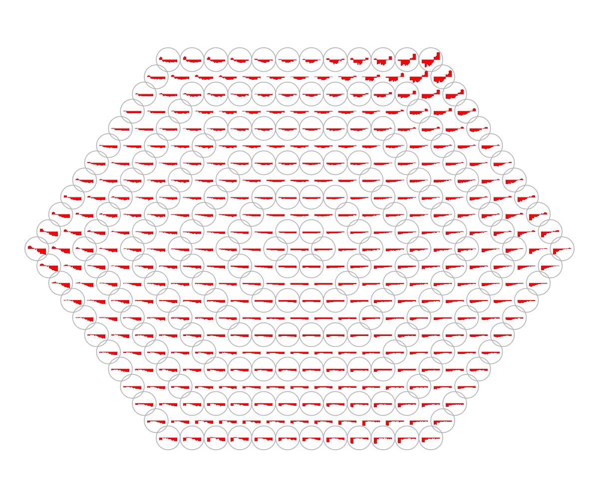

Demo for human embryo dataset from Fang et al
Notes:
# This is a demo for human embryo dataset from Fang et al
#
# This human embryo expression dataset (available from http://www.ncbi.nlm.nih.gov/pubmed/20643359) involves six successive developmental stages (S9-S14) with three replicates (R1-R3) for each stage, including:
## Fang: an expression matrix of 5,441 genes X 18 samples;
## Fang.geneinfo: a matrix of 5,441 X 3 containing gene information;
## Fang.sampleinfo: a matrix of 18 X 3 containing sample information.
###############################################################################
# (I) Load the package and import data
library(supraHex)
data(Fang) # import aforementioned three variables ('Fang', 'Fang.geneinfo' and 'Fang.sampleinfo')
# a matrix of 5,441 genes expressed in 18 samples
# transform data by row/gene centering
data <- Fang - matrix(rep(apply(Fang,1,mean),ncol(Fang)),ncol=ncol(Fang))
# (II) Train the supra-hexagonal map with input data only
sMap <- sPipeline(data)
Start at 2014-03-20 18:22:11
First, define topology of a map grid...
Second, initialise the codebook matrix given a topology and input data...
Third, get training at the rough stage...
Fourth, get training at the finetune stage...
Next, identify the best-matching hexagon/rectangle for the input data...
Finally, append the response data (hits and mqe) into the sMap object...
Below are the summaries of the training results:
dimension of input data: 5441x18
xy-dimension of map grid: xdim=23, ydim=23
grid lattice: hexa
grid shape: suprahex
dimension of grid coord: 397x2
initialisation method: linear
dimension of codebook matrix: 397x18
mean quantization error: 0.356873218409639
Below are the details of trainology:
training algorithm: batch
alpha type: invert
training neighborhood kernel: gaussian
trainlength (x input data length): 2 at rough stage; 3 at finetune stage
radius (at rough stage): from 6 to 1.5
radius (at finetune stage): from 1.5 to 1
End at 2014-03-20 18:22:13
Runtime in total is: 2 secs
visHexMulComp(sMap, title.rotate=10)
 sWriteData(sMap, data, filename="Output_Fang.txt")
## As you have seen, a figure displays the multiple components of trained map in a sample-specific manner. You also see that a .txt file has been saved in your disk. The output file has 1st column for your input data ID (an integer; otherwise the row names of input data matrix), and 2nd column for the corresponding index of best-matching hexagons (i.e. gene clusters). You can also force the input data to be output; type ?sWriteData for details.
# (III) Visualise the map, including built-in indexes, data hits/distributions, distance between map nodes, and codebook matrix
visHexMapping(sMap, mappingType="indexes")
sWriteData(sMap, data, filename="Output_Fang.txt")
## As you have seen, a figure displays the multiple components of trained map in a sample-specific manner. You also see that a .txt file has been saved in your disk. The output file has 1st column for your input data ID (an integer; otherwise the row names of input data matrix), and 2nd column for the corresponding index of best-matching hexagons (i.e. gene clusters). You can also force the input data to be output; type ?sWriteData for details.
# (III) Visualise the map, including built-in indexes, data hits/distributions, distance between map nodes, and codebook matrix
visHexMapping(sMap, mappingType="indexes")
 ## As you have seen, the smaller hexagons in the supra-hexagonal map are indexed as follows: start from the center, and then expand circularly outwards, and for each circle increase in an anti-clock order.
visHexMapping(sMap, mappingType="hits")
## As you have seen, the number represents how many input data vectors are hitting each hexagon, the size of which is proportional to the number of hits.
visHexMapping(sMap, mappingType="dist")

## As you have seen, map distance tells how far each hexagon is away from its neighbors, and the size of each hexagon is proportional to this distance.
visHexPattern(sMap, plotType="lines")

## As you have seen, line plot displays the patterns associated with the codebook matrix. If multple colors are given, the points are also plotted. When the pattern involves both positive and negative values, zero horizental line is also shown.
visHexPattern(sMap, plotType="bars")
## As you have seen, bar plot displays the patterns associated with the codebook matrix. When the pattern involves both positive and negative values, the zero horizental line is in the middle of the hexagon; otherwise at the top of the hexagon for all negative values, and at the bottom for all positive values.
# (IV) Perform partitioning operation on the map to obtain continuous clusters (i.e. gene meta-clusters) as they are different from gene clusters in an individual map node
sBase <- sDmatCluster(sMap)
visDmatCluster(sMap, sBase)

sWriteData(sMap, data, sBase, filename="Output_base_Fang.txt")
## As you have seen, each cluster is filled with the same continuous color, and the cluster index is marked in the seed node. Although different clusters are coded using different colors (randomly generated), it is unavoidable to have very similar colors filling in neighbouring clusters. In other words, neighbouring clusters are visually indiscernible. In this confusing situation, you can rerun the command visDmatCluster(sMap, sBase) until neighbouring clusters are indeed filled with very different colors. An output .txt file has been saved in your disk. This file has 1st column for your input data ID (an integer; otherwise the row names of input data matrix), and 2nd column for the corresponding index of best-matching hexagons (i.e. gene clusters), and 3rd column for the cluster bases (i.e. gene meta-clusters). You can also force the input data to be output; type ?sWriteData for details.
# (V) Reorder the sample-specific components of the map to delineate relationships between samples
sReorder <- sCompReorder(data, metric="euclidean")
Start at 2014-03-20 18:22:48
First, define topology of a map grid...
Second, initialise the codebook matrix given a topology and input data...
Third, get training at the rough stage...
Fourth, get training at the finetune stage...
Next, identify the best-matching hexagon/rectangle for the input data...
Finally, append the response data (hits and mqe) into the sMap object...
Below are the summaries of the training results:
dimension of input data: 18x18
xy-dimension of map grid: xdim=9, ydim=6
grid lattice: rect
grid shape: sheet
dimension of grid coord: 54x2
initialisation method: linear
dimension of codebook matrix: 54x18
mean quantization error: 162.781134038408
Below are the details of trainology:
training algorithm: sequential
alpha type: invert
training neighborhood kernel: gaussian
trainlength (x input data length): 30 at rough stage; 120 at finetune stage
radius (at rough stage): from 2 to 1
radius (at finetune stage): from 1 to 1
End at 2014-03-20 18:22:50
Runtime in total is: 2 secs
visCompReorder(sMap, sReorder, title.rotate=15)
## As you have seen, reordered components of trained map is displayed. Each component illustrates a sample-specific map and is placed within a two-dimensional rectangular lattice. Across components/samples, genes with similar expression patterns are mapped onto the same position of the map. Geometric locations of components delineate relationships between components/samples, that is, samples with the similar expression profiles are placed closer to each other.
## As you have seen, the smaller hexagons in the supra-hexagonal map are indexed as follows: start from the center, and then expand circularly outwards, and for each circle increase in an anti-clock order.
visHexMapping(sMap, mappingType="hits")
## As you have seen, the number represents how many input data vectors are hitting each hexagon, the size of which is proportional to the number of hits.
visHexMapping(sMap, mappingType="dist")

## As you have seen, map distance tells how far each hexagon is away from its neighbors, and the size of each hexagon is proportional to this distance.
visHexPattern(sMap, plotType="lines")

## As you have seen, line plot displays the patterns associated with the codebook matrix. If multple colors are given, the points are also plotted. When the pattern involves both positive and negative values, zero horizental line is also shown.
visHexPattern(sMap, plotType="bars")
## As you have seen, bar plot displays the patterns associated with the codebook matrix. When the pattern involves both positive and negative values, the zero horizental line is in the middle of the hexagon; otherwise at the top of the hexagon for all negative values, and at the bottom for all positive values.
# (IV) Perform partitioning operation on the map to obtain continuous clusters (i.e. gene meta-clusters) as they are different from gene clusters in an individual map node
sBase <- sDmatCluster(sMap)
visDmatCluster(sMap, sBase)

sWriteData(sMap, data, sBase, filename="Output_base_Fang.txt")
## As you have seen, each cluster is filled with the same continuous color, and the cluster index is marked in the seed node. Although different clusters are coded using different colors (randomly generated), it is unavoidable to have very similar colors filling in neighbouring clusters. In other words, neighbouring clusters are visually indiscernible. In this confusing situation, you can rerun the command visDmatCluster(sMap, sBase) until neighbouring clusters are indeed filled with very different colors. An output .txt file has been saved in your disk. This file has 1st column for your input data ID (an integer; otherwise the row names of input data matrix), and 2nd column for the corresponding index of best-matching hexagons (i.e. gene clusters), and 3rd column for the cluster bases (i.e. gene meta-clusters). You can also force the input data to be output; type ?sWriteData for details.
# (V) Reorder the sample-specific components of the map to delineate relationships between samples
sReorder <- sCompReorder(data, metric="euclidean")
Start at 2014-03-20 18:22:48
First, define topology of a map grid...
Second, initialise the codebook matrix given a topology and input data...
Third, get training at the rough stage...
Fourth, get training at the finetune stage...
Next, identify the best-matching hexagon/rectangle for the input data...
Finally, append the response data (hits and mqe) into the sMap object...
Below are the summaries of the training results:
dimension of input data: 18x18
xy-dimension of map grid: xdim=9, ydim=6
grid lattice: rect
grid shape: sheet
dimension of grid coord: 54x2
initialisation method: linear
dimension of codebook matrix: 54x18
mean quantization error: 162.781134038408
Below are the details of trainology:
training algorithm: sequential
alpha type: invert
training neighborhood kernel: gaussian
trainlength (x input data length): 30 at rough stage; 120 at finetune stage
radius (at rough stage): from 2 to 1
radius (at finetune stage): from 1 to 1
End at 2014-03-20 18:22:50
Runtime in total is: 2 secs
visCompReorder(sMap, sReorder, title.rotate=15)
## As you have seen, reordered components of trained map is displayed. Each component illustrates a sample-specific map and is placed within a two-dimensional rectangular lattice. Across components/samples, genes with similar expression patterns are mapped onto the same position of the map. Geometric locations of components delineate relationships between components/samples, that is, samples with the similar expression profiles are placed closer to each other.
)
)
){kind=link}
){kind=link}
){kind=link}
){kind=link}
){kind=link}
){kind=link}
Functions used in this demo
- sPipeline
- visHexMulComp
- sWriteData
- visHexMapping
- visHexPattern
- sDmatCluster
- visDmatCluster
- sCompReorder
- visCompReorder
Citation
Fang H, Gough J. (2014) supraHex: an R/Bioconductor package for tabular omics data analysis using a supra-hexagonal map. Biochemical and Biophysical Research Communications, 443(1), 285-289. http://dx.doi.org/10.1016/j.bbrc.2013.11.103, PMID: 24309102